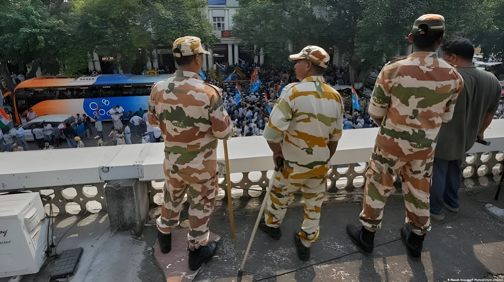

Les 9 et 10 octobre 2026, les autorités indiennes ont placé le centre de New Delhi sous un dispositif de sécurité exceptionnel pour empêcher un rassemblement du Cockroach Janta Party, mouvement satirique de jeunes qui réclame la démission du chef de la Commission électorale, Gyanesh Kumar, après une révision des listes qui a radié plus de 130 millions de noms. Plus de 20 000 policiers et paramilitaires, 57 stations de métro fermées, internet mobile coupé : de 2 000 à 3 000 personnes ont été interpellées à Delhi, dont le fondateur du mouvement, libéré ensuite par un tribunal. Le pouvoir parle d'« éléments anarchiques ».
Dans la nuit du vendredi 9 au samedi 10 octobre 2026, les autorités indiennes ont placé le centre de New Delhi sous un dispositif de sécurité exceptionnel pour empêcher une manifestation de jeunes, convoquée par le « Cockroach Janta Party » (CJP) à Jantar Mantar, le site de protestation désigné de la capitale. Plus de 20 000 policiers et paramilitaires ont été déployés, 23 000 selon des médias locaux. La police n'avait pas autorisé le rassemblement et a décrit les restrictions comme « temporaires et préventives ». Les organisateurs ont refusé de renoncer et ont rappelé que manifester est un droit fondamental.
Le centre de la capitale ressemblait à une ville en état de siège : barrières métalliques, blocs de béton, véhicules anti-émeutes équipés de lanceurs de gaz lacrymogène, contrôles aux points d'entrée et fouille de bus à la recherche de manifestants.
Le métro de Delhi a fermé 57 stations, et les chemins de fer indiens ont annulé plusieurs trains à destination de deux gares de la capitale. L'internet mobile a été suspendu dans le quartier d'affaires central. La Cour suprême avait pourtant demandé aux autorités de réexaminer ces mesures et de maintenir une partie des transports publics. Selon la presse locale, des policiers ont aussi rendu visite à des mosquées pour demander aux responsables religieux de dissuader les fidèles de manifester.
| Dispositif du 10 octobre | Chiffre |
|---|---|
| Forces de l'ordre déployées | > 20 000 (23 000 selon la presse locale) |
| Stations de métro fermées | 57 |
| Interpellations à Delhi | ≈ 2 000 à 2 500 |
| Interpellations à Bombay | ≈ 600 |
Les chiffres varient. Reuters, citant un responsable du ministère de l'Intérieur, évoque environ 2 000 interpellations à Delhi ; The Hindu, citant la police, près de 2 500, voire jusqu'à 3 000 selon Euronews, ce qui n'a pas pu être vérifié. À Bombay, environ 600 personnes ont été arrêtées selon l'agence ANI. Le fondateur du CJP, Abhijeet Dipke, et deux autres responsables, Saurav Das et Ashutosh Ranka, ont été interpellés à leur descente d'avion en provenance de Bombay. « Je suis venu pour être arrêté. Je n'ai pas peur de vous », a dit Dipke dans une vidéo. Le mouvement affirme qu'ils ont été emmenés « dans un lieu tenu secret » sans accès à des avocats.
Parmi les autres personnes détenues, selon Al Jazeera, figurent le youtubeur Dhruv Rathee, l'avocat Prashant Bhushan et le secrétaire général du CPI(ML), Dipankar Bhattacharya. Un tribunal a ordonné la libération des trois dirigeants du CJP, à la condition de ne pas troubler l'ordre public pendant un an, a indiqué leur avocate, Ratna Singh.
Des quartiers restent sous verrouillage pour un deuxième jour ; le mouvement annonce de nouvelles manifestations.
Manifestation interdite à Jantar Mantar ; interpellations massives ; libération des trois dirigeants du CJP.
Mise en place du dispositif : métro fermé, internet mobile coupé, barrages routiers.
Rahul Gandhi brièvement placé en garde à vue à deux reprises.
Heurts lors d'une manifestation : au moins 180 blessés ; le ministre de l'Éducation démissionne.
Naissance du Cockroach Janta Party.
Le CJP, mouvement satirique né en mai 2026 d'une phrase du juge en chef sur les jeunes chômeurs, comme nous l'avons raconté dans notre article sur le « parti des cafards », réclamait la démission du chef de la Commission électorale, Gyanesh Kumar. Il l'accuse de superviser une révision des listes électorales qui, selon ses détracteurs, favorise le Bharatiya Janata Party (BJP) du Premier ministre Narendra Modi. L'affaire est née quand l'Indian Express a rapporté que deux commissaires électoraux avaient contesté les révisions de Kumar, qui ont fait disparaître environ 130 millions de noms.
« Je suis venu pour être arrêté. Je n'ai pas peur de vous. »
— Abhijeet Dipke, fondateur du Cockroach Janta Party, 10 octobre 2026 (traduction)Lancée en 2025, la « révision intensive spéciale » des listes électorales a conduit à radier plus de 130 millions de noms, selon le décompte des médias. Les données de la Commission attribuent ces radiations à 63 millions de personnes déménagées, 30 millions introuvables et 28 millions de décès. La Commission affirme que ces chiffres correspondent à des signalements au stade du projet, que l'exercice n'est pas terminé et que les électeurs radiés à tort peuvent se réinscrire. Les détracteurs, dont l'opposition, soutiennent que le processus pénalise les gens sans anciens papiers et, selon eux, les minorités, notamment musulmanes, ce que la Commission et le BJP démentent.
| Raison des radiations | Millions de noms |
|---|---|
| Électeurs ayant déménagé | 63 |
| Électeurs introuvables | 30 |
| Électeurs décédés | 28 |
Le dirigeant de l'opposition Rahul Gandhi et des dizaines d'élus ont été brièvement placés en garde à vue pendant les actions de la semaine. Le vendredi, ils ont remis un mémorandum à la présidente Droupadi Murmu, qui a demandé des preuves d'un « vol de voix », selon Gandhi. Le président du Congrès, Mallikarjun Kharge, estime que le gouvernement a transformé la « mère de la démocratie » en « démocratie muselée ». Des organisations d'étudiants ont aussi accusé la police d'avoir arrêté des manifestants en déplacement. Le précédent du 20 juillet pèse sur la journée : des heurts avaient fait au moins 180 blessés selon la police, et le ministre de l'Éducation avait ensuite dû démissionner.
Le porte-parole du BJP, Sambit Patra, a qualifié les manifestants d'« éléments anarchiques » dont le « spectacle raté a été entièrement démoli », et le parti met le succès électoral sur le compte de la popularité de Modi et de la croissance. La mission de l'Inde auprès de l'ONU à Genève a jugé les inquiétudes internationales « mal placées » et une « ingérence injustifiée dans les affaires intérieures de l'Inde », en rappelant que le droit de réunion pacifique est garanti, sous réserve de restrictions raisonnables. Kumar, lui, n'a pas commenté.
Fermer un métro, couper l'internet mobile et interpeller des milliers de personnes avant même qu'elles se rassemblent revient à neutraliser une manifestation sans la juger : l'argument de la prévention s'applique à tous, mais il frappe d'abord ceux qui contestent le pouvoir. L'Inde, qui accueillait en septembre le sommet des BRICS, dont nous avons rendu compte, se présente comme la plus grande démocratie du monde ; son verrouillage de la capitale met cette image à l'épreuve.
Le fond du litige reste entier : 130 millions de noms radiés ne disent pas s'il s'agit d'un nettoyage légitime ou d'une exclusion. Seule une vérification indépendante, que la Commission refuse jusqu'ici d'organiser en dehors de ses propres procédures, pourrait trancher, et c'est elle que la rue réclamait.